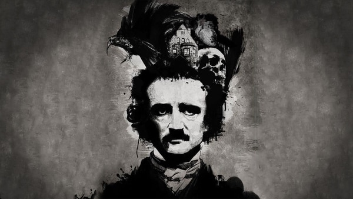

Edgar Allan Poe
Poe fue reconocido globalmente como el padre del terror y las novelas policíacas. A pesar de todos los halagos que recibió durante su vida e incluso despues de su muerte, el autor ha obtenido críticas negativas de sus contemporaneos, tildándolo de alcohólico, ególatra, vulgar, malhumorado, drogadicto y digno de lástima.
Por Faustina Mirallas Linares
Edgar Allan Poe fue un escritor, poeta, crítico y periodista romántico estadounidense, generalmente reconocido como uno de los maestros universales del relato corto, del cual fue uno de los primeros practicantes en su país. Fue renovador de la novela gótica, recordado especialmente por sus cuentos de terror. Considerado el inventor del relato detectivesco, contribuyó asimismo con varias obras al género emergente de la ciencia ficción. Por otra parte, fue el primer escritor estadounidense de renombre que intentó hacer de la escritura su modus vivendi, lo que tuvo para él lamentables consecuencias.
SUS
PRIMEROS
AÑOS
Fue bautizado como Edgar Poe en Boston, Massachusetts, y sus padres murieron cuando era niño. Fue recogido por un matrimonio adinerado de Richmond, Virginia, Frances y John Allan, aunque nunca fue adoptado oficialmente. Pasó un curso académico en la Universidad de Virginia y posteriormente se enroló, también por breve tiempo, en el ejército. Sus relaciones con los Allan se rompieron en esa época, debido a las continuas desavenencias con su padrastro, quien a menudo desoyó sus peticiones de ayuda y acabó desheredándolo.
A la muerte se le toma de frente con valor y después se le invita a una copa
Edgar Allan Poe
A la muerte se le toma de frente con valor y después se le invita a una copa
Edgar Allan Poe
CARRERA
PROFESIONAL
Su carrera literaria se inició con un libro de poemas, "Tamarlane and Other Poems", en 1827. En Enero de 1845, publicó un poema que le haría célebre: The Raven. El gran sueño del escritor, editar su propio periódico, que iba a llamarse "The Stylus", nunca se cumplió. Poe escribió cuentos de distintos generos: poesía, crítica literaria y ensayo, este último sobre los temas más variados, además de una novela larga. A lo largo de toda su vida, tambien escribió numerosas cartas. Algunas de sus obras más importantes son: King Pest (1835); The Murders in the Rue Morgue (1841); The Masque of the Red Death (1842); The Black Cat (1843); The Tell-Tale Heart (1843); To Helen (1831); The Raven (1845); Ulalume (1847); Annabel Lee (1849) y The Bells (1849).
EL MISTERIO
DE SU MUERTE
El 3 de octubre de 1849, Poe fue hallado en las calles de Baltimore en estado de delirio, «muy angustiado, y necesitado de ayuda inmediata». Fue trasladado por su viejo amigo James E. Snodgrass al Washington College Hospital, donde murió el domingo, 7 de octubre, a las 5:00 de la madrugada. En ningún momento fue capaz de explicar cómo había llegado a dicha situación, ni por qué motivo llevaba ropas que no eran suyas. La leyenda, recogida por Julio Cortázar y otros autores, cuenta que en sus últimos momentos invocaba obsesivamente a un tal Reynolds (acaso el explorador polar que había servido de referente para su novela de aventuras fantásticas La narración de Arthur Gordon Pym), y que al expirar pronunció estas palabras: «¡Que Dios ayude a mi pobre alma!» Tanto los informes médicos, como el certificado de defunción se perdieron. Los periódicos de la época informaron de que la muerte de Poe se debió a «congestión» o «inflamación» cerebral, el eufemismo que solía utilizarse para los fallecimientos por motivos más o menos vergonzantes, como el alcoholismo. Hoy en día, la causa exacta de la muerte continúa siendo un misterio, aunque desde 1872 se cree que pudo deberse al abuso de agentes electorales sin escrúpulos, que en la época solían utilizar a pobres incautos, emborrachándolos, para hacerles votar varias veces por el mismo candidato. Las especulaciones han incluido el delírium tremens, el ataque cardíaco, epilepsia, sífilis, meningitis, el cólera y aun el asesinato.